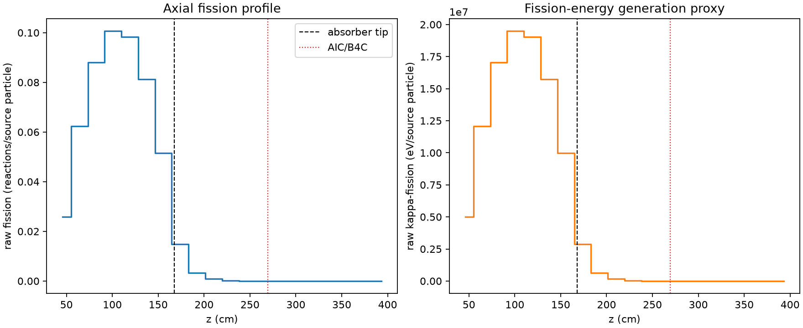
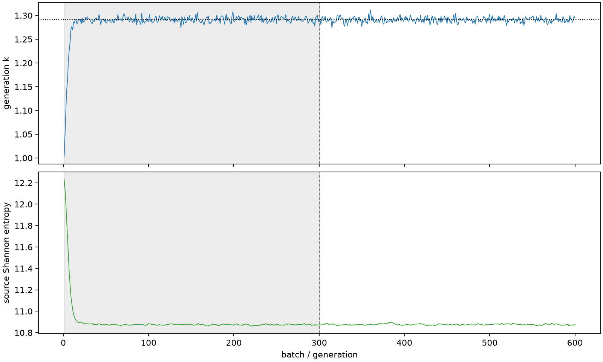

| field | value |
|---|---|
| experiment | V2-STAGE_32_OGRENCI_04-0008 |
| k | 1.2912384748677745 |
| MC standard error | 0.0001908639349082957 |
| seconds | 1347.1036430170006 |
| acceptance | not_assessed |
| convergence | review_required |
Completed is output integrity only; physical and statistical review required. Zero tallies do not prove zero production or zero uncertainty.
| diagnostic | value |
|---|---|
| geometric fuel voxels | 5280 |
| zero fission tally voxels | 1212 |
| low signal fuel voxels | 2326 |
| low signal fission share | 0.00011714005715386363 |
| low signal kappa share | 0.00011719110130490097 |
| important fission share | 0.9500716283284029 |
| previous filter included | 2954 |
| duration estimate s | 1562.5173488400023 |
| actual minus estimate s | -215.4137058230017 |
| fission relative MC error | statistics |
|---|---|
| all_geometric_fuel | {"voxels": 5280, "positive_mean_voxels": 4068, "zero_mean_voxels": 1212, "undefined_relative_error_voxels": 1212, "median": 0.014603352668755043, "p95": 0.9083287768383745, "maximum": 1.0000000000000002} |
| low_signal | {"voxels": 2326, "positive_mean_voxels": 1114, "zero_mean_voxels": 1212, "undefined_relative_error_voxels": 1212, "median": 0.5478073246073045, "p95": 1.0, "maximum": 1.0000000000000002} |
| important_95pct | {"voxels": 1773, "positive_mean_voxels": 1773, "zero_mean_voxels": 0, "undefined_relative_error_voxels": 0, "median": 0.006450247609686928, "p95": 0.010920056831512908, "maximum": 0.012632687025227076} |
| outside_previous_filter | {"voxels": 2326, "positive_mean_voxels": 1114, "zero_mean_voxels": 1212, "undefined_relative_error_voxels": 1212, "median": 0.5478073246073045, "p95": 1.0, "maximum": 1.0000000000000002} |
| kappa_fission relative MC error | statistics |
|---|---|
| all_geometric_fuel | {"voxels": 5280, "positive_mean_voxels": 4068, "zero_mean_voxels": 1212, "undefined_relative_error_voxels": 1212, "median": 0.014585886179342089, "p95": 0.907815701082871, "maximum": 1.0000000000000002} |
| low_signal | {"voxels": 2326, "positive_mean_voxels": 1114, "zero_mean_voxels": 1212, "undefined_relative_error_voxels": 1212, "median": 0.5468516745921136, "p95": 1.0, "maximum": 1.0000000000000002} |
| important_95pct | {"voxels": 1773, "positive_mean_voxels": 1773, "zero_mean_voxels": 0, "undefined_relative_error_voxels": 0, "median": 0.006443061930626059, "p95": 0.010908265972098137, "maximum": 0.012617311556018678} |
| outside_previous_filter | {"voxels": 2326, "positive_mean_voxels": 1114, "zero_mean_voxels": 1212, "undefined_relative_error_voxels": 1212, "median": 0.5468516745921136, "p95": 1.0, "maximum": 1.0000000000000002} |
| axial bin | fission share | kappa-fission share |
|---|---|---|
| 1 | 0.04906748875331774 | 0.04906905331102822 |
| 2 | 0.11818094782614084 | 0.11817975720900865 |
| 3 | 0.1670303335917338 | 0.16702863757494704 |
| 4 | 0.1908111699022521 | 0.19080899260383577 |
| 5 | 0.18659062042603858 | 0.18658860958219672 |
| 6 | 0.15408918285623155 | 0.15408739895161905 |
| 7 | 0.09763176049354229 | 0.09763060081921934 |
| 8 | 0.028125006557492616 | 0.028130712884923886 |
| 9 | 0.006345540307868021 | 0.00634753582973876 |
| 10 | 0.0015852173872096553 | 0.0015857584268191504 |
| 11 | 0.0004064085550868156 | 0.00040655871393742226 |
| 12 | 0.00010184402911471076 | 0.00010188327346653835 |
| 13 | 2.5404775154629584e-05 | 2.54203953225616e-05 |
| 14 | 7.072556674338825e-06 | 7.076643232038535e-06 |
| 15 | 1.681222551527567e-06 | 1.6823670705242244e-06 |
| 16 | 3.2075959078273263e-07 | 3.2141363423423904e-07 |
| 17 | 0.0 | 0.0 |
| 18 | 0.0 | 0.0 |
| 19 | 0.0 | 0.0 |
| 20 | 0.0 | 0.0 |
Histories include the inactive-to-active transition at batch 300. kappa-fission approximates fission energy production, not total heat deposition.

